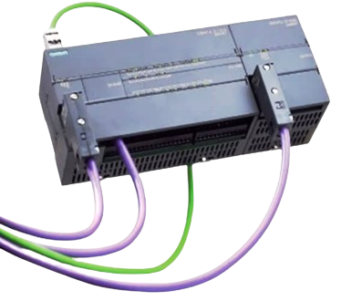
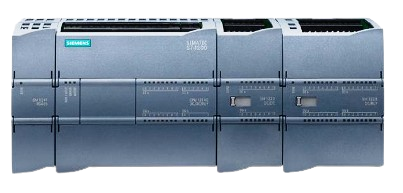
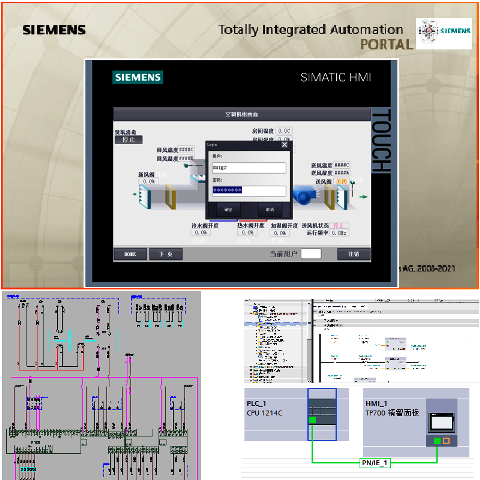

Siemens SIMATIC WINCC
SIMATIC Wincc过程可视化系统
基于 PC 的 HMI 系统，适用于对各种行业的生产过程、生产工序、机器设备和工厂进行可视化及操作控制。该系统不仅支持简单的单站系统，同时还支持带有冗余服务器的分布式多站系统，以及基于Web的全球解决方案。功能强大的WinCC，是整个公司实现信息纵向集成的数据交换枢纽。基于开放式编程接口，西门子开发了大量的 WinCC 选件，并协同外部合作 伙伴共同开发了各种 WinCC 附加件，构建了一个完整的 SCADA 软件生态系统。
功能及应用特点
● 多功能
适用于所有行业的解决方案 -多语言支持，全球适用 -可集成到所有自动化解决方案中。
● 集成所有 HMI 功能
用户管理 -操作员监控 -事件报告、确认和归档 -测量值的采集、压缩和归档（含长期备份） -过程与组态数据的记录和归档。
● 快速高效的系统组态
组态向导极大简化了组态过程 -通过交叉引用列表可以查阅画面对象属性支持多语言软件组态，组态工具轻松应对海量数据，轻松实现画面和面板的知识保护
● 强大的可扩展性
单站组态快速扩展为客户机/服务器架构；冗余服务器显著提升系统可用性； 轻松实现基于 Web 的过程可视化，无论是PC还是手机之类的智能移动终端。
● 开放式标准，系统集成更为轻松便捷
采用功能强大的实时数据库 Microsoft SQL Server，支持 ActiveX 控件的开放式应用模块；采用 VBS 或 C 脚本实现应用扩展；基于 OPC 和 OPC UA 标准进行跨供应商通信
S7-200SMART
S7-200 SMART 系列包括许多微型可编程逻辑控制器 (Micro PLC, Micro Programmable Logic Controller)，S7-200 SMART 系列产品结构紧凑、成本低廉且具有功能强大的指令集，是控制小型应用的完美解决方案。S7-200 SMART 产品多种多样且提供基于 Windows的编程工具，可以灵活地解决各种小规模的自动化问题。
S7-1200系列
S7-1200 系列是一款可编程逻辑控制器 (PLC, Programmable Logic Controller)，可以控制各种自动化应用。 S7-1200 设计紧凑、成本低廉且具有功能强大的指令集，这些特点使它成为控制各种中小型应用的完美解决方案。S7-1200 型号和基于 Windows 的编程工具提供了解决自动化问题时需要的灵活性。
SIMATIC S7-1200 的显著特性
• 以宽幅 AC 或 DC 电源形式集成的电源 (85 - 264 V AC 或 24 V DC)；
• 集成 24V DC 数字量输入 (85 - 264 V AC 或 24 V DC)；
• 集成的以太网接口；
• 集成数字量输出 24V DC 或继电器；
• 频率高达 100 kHz 的高速计数器 (HSC)；
• 频率高达 100 kHz 的脉冲序列输出 (PTO)；
• 通过信号板直接在 CPU 上扩展信号通道实现模块化和可裁剪性同时保持 CPU 原有空间；
• 通过扩展模块的大量模拟量和数字量输入和输出信号实现模块化和可裁剪性；
• 通过连接附加通信模块 (如：RS 485 或 RS232) 实现了模块化和可裁剪性；
• 可选的存储器 (SIMATIC 存储卡)；
• 所有模块上的端子都可拆卸 ；
• 密码保护；
